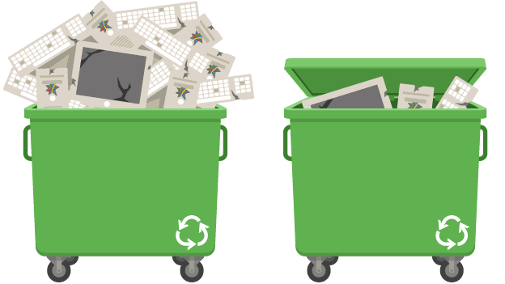

Environmental Effects
There are many ways digital technology can be used to benefit the environment. For example, surveillance equipment has increased public awareness of the environmental impact of digital technology. However, the production, use and disposal of digital technologies can also have negative impacts on the local and global environment.
Some of the most common activities that has adverse effect on environment are:
Extraction of Rare Materials
Some parts of smartphones cannot be manufactured without rare chemical elements such as europium and dysprosium.
The upgrade culture has created a high demand for these materials and an ever-increasing supply. means that Exhausted. There is currently no alternative renewable material that is as effective.
Pollution
Manufacturing facilities emit hazardous chemicals and pollutants into the air. Components are often manufactured in plastic packaging
(not necessarily recycled) and shipped internationally (fuel is used for transportation).At European Waste Reduction Week, he found that the production of laptops released 210 kg of CO2 into the atmosphere.
Disposal
According to a United Nations report, the world generates up to 50 million tons of electronic and electronic waste (e-waste) each year, of which only 20% is officially recycled.
Figures released in July 2020 show that the UK is the world's second largest per capita producer of e-waste (23.9kg compared to the global average of 7.3kg per capita).
Some devices contain heavy metals, such as lead, and toxic chemicals, which pollute the soil, groundwater, and air. Picture above shows pollution caused by low-paid workers burning e-waste to expose the valuable metals inside.
Run-off from landfills contaminates drinking water and water used for bathing, which exposes people and wildlife to dangerous chemicals.